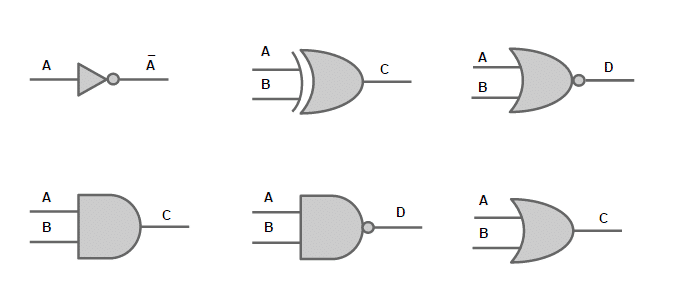
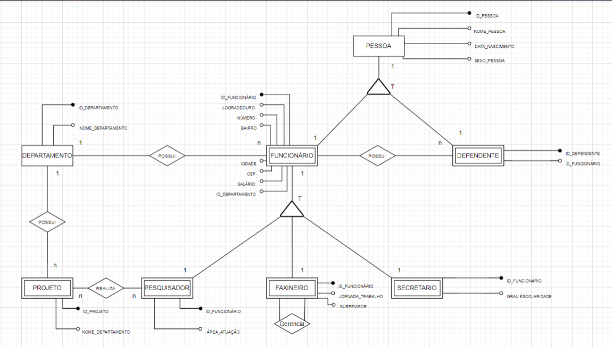
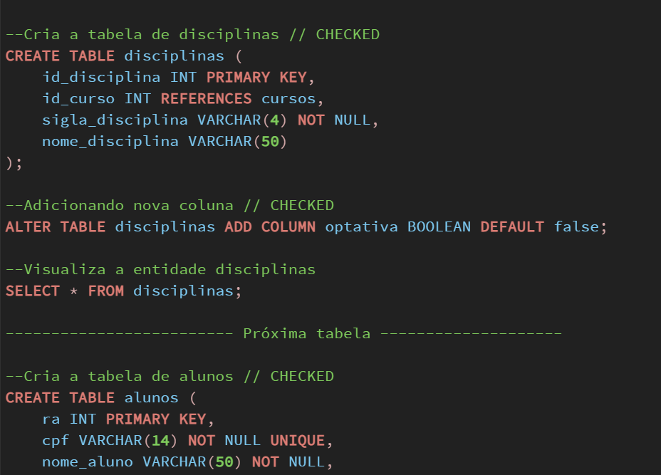
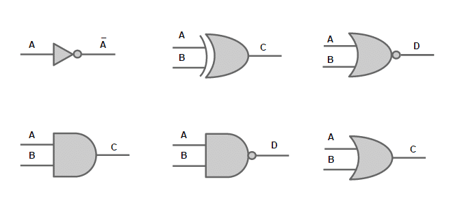
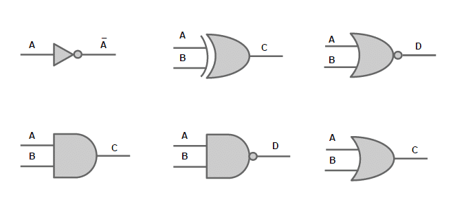

PORTFÓLIO 1º SEMESTRE ANÁLISE E DESESENVOLVIMENTO DE SISTEMAS
Gabriel Cavalcante
Abaixo você verá uma breve explicação do meu aprendizado no 1º semestre de Análise e Desenvolvimento de Sistemas, contendo conteúdos sobre as matérias de linguagem de programação, automação industrial, redes de computadores, banco de dados e ciência de dados.
LINGUAGEM DE PROGRAMAÇÃO
No estudo de linguagem de programação aprendemos sobre HTML, CSS e JavaScript. Essas linguagens são utilizadas pra criar sites. HTML é usado pra estruturar o documento, com tags como body, head e html, e elementos como p, h1, img, entre outros.
Aprendemos a usar atributos como o href para colocar links e várias tags pra fazer listas, tabelas e formulários.
O HTML Semântico é uma forma organizada de escrever código, usando tags específicas pra estruturar o conteúdo,
tipo header, nav, article, section, aside, main e footer. Isso deixa o código mais fácil de entender,
acessível e otimizado pra motores de busca.
CSS é usado pra estilizar os elementos do HTML. A gente pode definir cores, fontes e outros estilos pra deixar o site bonito.
Além disso, com CSS dá pra criar sites responsivos, que se adaptam a diferentes dispositivos e tamanhos de tela.
A gente usa unidades de medida flexíveis, tipo porcentagem, e media queries pra ajustar o estilo pra cada dispositivo. Dominar essas linguagens é essencial pra criar projetos web de qualidade.
No estudo de JavaScript, aprendi a sintaxe básica e os elementos essenciais para escrever código funcional. Isso inclui declaração de variáveis, tipos de dados, operadores e estruturas de controle, como if-else e for. Também aprendi a criar e usar funções para realizar cálculos e manipular valores.
Além disso, explorei o conceito de DOM (Document Object Model) em JavaScript.
O DOM permite acessar e manipular os elementos de um documento HTML ou XML por meio de scripts.
Isso abre um leque de possibilidades, como interagir com botões, exibir ou ocultar elementos e limpar campos de texto.
Esses conhecimentos em JavaScript são fundamentais para criar funcionalidades interativas e dinâmicas em websites. Continuar a explorar e praticar esses conceitos ajudará a aprimorar minhas habilidades de programação.
Automação Industrial
A automação industrial é um campo fascinante que utiliza tecnologia avançada para otimizar processos de produção. Ao estudar esse tema, descobri que as portas lógicas desempenham um papel fundamental nesse contexto. Essas portas são dispositivos eletrônicos que operam com sinais de entrada para gerar saídas específicas, permitindo o controle eficiente do fluxo de informações em sistemas automatizados.
Durante meus estudos, também aprendi sobre a importância dos números binários na automação industrial. Essa forma de representação numérica com apenas dois dígitos, 0 e 1, é essencial para o funcionamento dos sistemas digitais que encontramos nesse campo. Compreender como os números binários são utilizados para comunicação e processamento de dados foi uma revelação interessante.
Outro aspecto empolgante que descobri é a robótica básica na automação industrial. Os robôs programáveis desempenham um papel crucial ao realizar tarefas complexas e repetitivas de forma autônoma. Fiquei impressionado ao aprender sobre as capacidades desses robôs, como a interação com o ambiente, a manipulação de objetos e a execução de atividades especializadas, como soldagem e pintura.
Um exemplo prático e aplicável da automação industrial é o controle de semáforos. Utilizando um microcontrolador Arduino básico, é possível programar o funcionamento dos LEDs para controlar o tráfego de veículos e pedestres. Aprendi a criar um programa que define o tempo de exibição para cada cor do semáforo, garantindo uma circulação segura e ordenada.
Explorar conceitos como automação industrial, portas lógicas, números binários, robótica básica e Arduino me permitiu entender como sistemas inteligentes e automatizados são desenvolvidos. Fico entusiasmado com as possibilidades de aplicação dessa tecnologia, que vão além do semáforo e podem transformar diversos setores industriais, impulsionando a inovação e melhorando continuamente os processos.

Redes de Computadores
rede de computadores é um sistema que permite a comunicação e compartilhamento de recursos entre diferentes dispositivos. Um dos modelos mais importantes na área é o Modelo OSI (Open Systems Interconnection), que divide o processo de comunicação em sete camadas: física, enlace de dados, rede, transporte, sessão, apresentação e aplicação. Cada camada possui funções específicas que garantem a transmissão eficiente e segura dos dados.
Outro modelo amplamente utilizado é o TCP/IP (Transmission Control Protocol/Internet Protocol), que é baseado em quatro camadas: camada de interface de rede, camada de internet, camada de transporte e camada de aplicação. O TCP/IP é o protocolo fundamental da internet e permite a comunicação entre diferentes redes e sistemas.
Além disso, a estrutura e governança das redes de computadores são fundamentais para o seu funcionamento. Isso envolve a organização dos componentes de rede, como roteadores, switches e cabos, e a definição de políticas e protocolos para garantir o desempenho, segurança e eficiência da rede.
Para entender completamente o contexto das redes de computadores, é importante conhecer a história dos computadores. A história dos computadores remonta a várias décadas, desde os primeiros dispositivos mecânicos até os computadores modernos de alta velocidade. Ao longo do tempo, houve avanços significativos em termos de capacidade de processamento, armazenamento e conectividade, o que possibilitou o desenvolvimento das redes de computadores como as conhecemos hoje.
Banco de Dados
Durante meus estudos sobre Banco de Dados, mergulhei no conhecimento aprofundado do gerenciamento e estruturação dos dados, com ênfase no PostgreSQL. Durante essa jornada, adquiri uma compreensão sólida sobre a importância da modelagem de dados, utilizando diagramas MER e DER para representar de forma clara as entidades, atributos e relacionamentos envolvidos. O PostgreSQL se destacou como uma solução robusta e flexível, oferecendo recursos avançados que permitem a administração eficiente de bancos de dados.
Ao explorar o PostgreSQL, pude experimentar as vantagens de sua arquitetura e recursos avançados, como indexação, transações ACID (Atomicidade, Consistência, Isolamento e Durabilidade), integridade referencial e suporte a consultas complexas. Através dessa experiência, compreendi como a escolha de um sistema de gerenciamento adequado desempenha um papel fundamental na garantia da eficiência, segurança e disponibilidade das informações.
No geral, aprofundar meu conhecimento em Banco de Dados e no PostgreSQL me proporcionou uma visão ampla sobre a importância da organização dos dados e da escolha correta do sistema de gerenciamento. Essas habilidades são essenciais para garantir a integridade e a confiabilidade das informações em qualquer aplicação ou projeto que envolva o armazenamento e o acesso a dados.


Ciência de Dados
A ciência de dados é uma área que combina habilidades de programação, estatística e análise de dados para extrair conhecimentos e insights valiosos. No processo de análise, o Google Colab, uma plataforma baseada em nuvem, juntamente com a linguagem de programação Python, é amplamente utilizada devido à sua facilidade de uso e às poderosas bibliotecas disponíveis. Essas bibliotecas, como o Matplotlib e o Pandas, permitem plotar gráficos e criar tabelas para visualizar e explorar os dados.
Um exemplo prático é a análise da tabela de passageiros do Titanic, que contém informações como idade, sexo, classe e sobrevivência. Com o uso das ferramentas adequadas, é possível analisar padrões, fazer previsões e responder a perguntas relevantes, como quais fatores influenciaram a sobrevivência dos passageiros.
Além disso, aprender conceitos de matemática, como limite, derivadas e integrais, é essencial na ciência de dados. Esses conhecimentos são aplicados em algoritmos de machine learning, onde otimização e modelagem matemática desempenham um papel crucial. A estatística também é fundamental, pois fornece ferramentas para a interpretação dos dados, a validação de resultados e a tomada de decisões baseadas em evidências sólidas.
Em resumo, a ciência de dados utiliza o Google Colab, Python e bibliotecas como Matplotlib e Pandas para explorar dados, plotar gráficos e criar tabelas. A análise da tabela de passageiros do Titanic exemplifica a aplicação dessas técnicas. Além disso, o conhecimento de matemática, incluindo limite, derivadas, integrais e estatística, é fundamental para o sucesso na ciência de dados.

 
